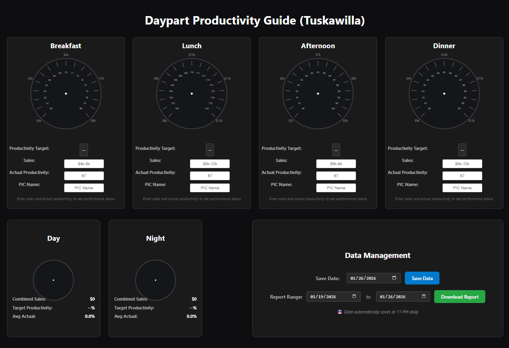
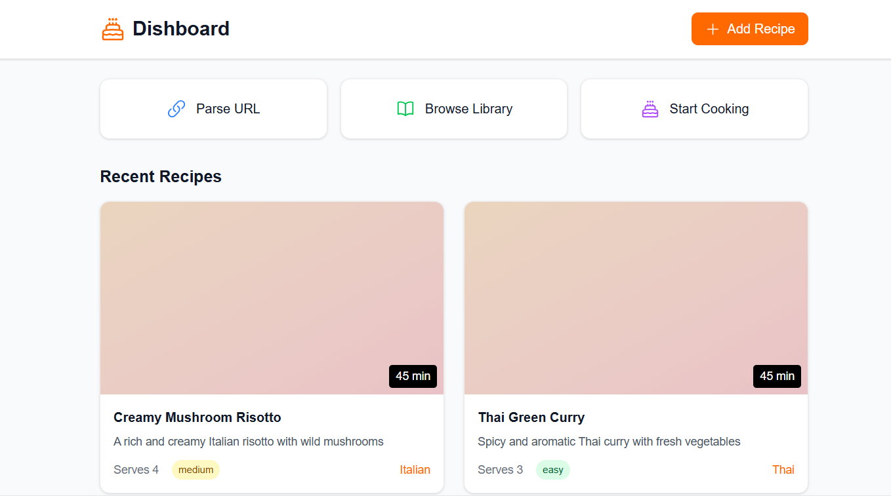
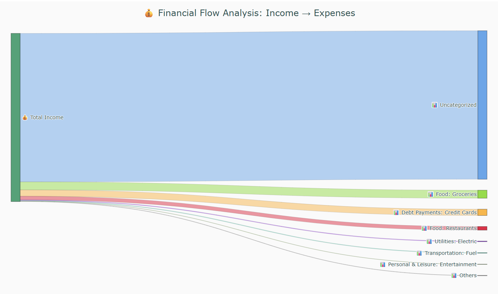

Current Launch Work
A snapshot of the operational systems, workflow software, and product experiments I’ve been building and preparing to launch.
Systems Built for Real Operations
Current work includes product systems, dashboard and workflow tools, and interactive software that solves coordination, visibility, and execution problems in real organizations.

FaithfulSteward — Full-Stack SaaS Platform
Assets generate dynamic maintenance calendars without collecting sensitive data, supporting clarity without overreach.
Key Features
- Asset-based preventive maintenance engine that generates schedules dynamically
- Dynamic maintenance calendar based on service intervals (weekly → annual)
- Role-based access with secure authentication and authorization
- Leadership visibility without micromanagement or operational interference
- Maintenance Calendar Engine with rules-driven scheduling
- Facilities Statusboard for lightweight issue tracking and context

HR & Labor Management — Scheduling, Productivity & Analytics
Built multiple internal systems grounded in real operational datasets with automated validation and exception handling.
System Capabilities
- Sales-based labor forecasting models with historical trend analysis
- Availability-based Gantt charts for staffing visualization and planning
- Automated schedule validation and coverage gap detection
- Productivity tracking tied to forecast vs actuals with variance analysis
- Automated messaging triggers for staffing gaps and scheduling exceptions
- Multi-location coordination with centralized oversight and local autonomy

Complete Inventory Management System
End-of-month counts, and digital resource management for multi-location operations.
System Components
- Transfer integrity validation with duplicate detection and audit-safe archiving
- Demand forecasting models based on historical patterns and seasonal trends
- End-of-month count automation with variance tracking and reporting
- On-hand technology tracking for assets and equipment management
- Digital resource platform providing teams with real-time inventory tools
- Analytics dashboard showing top items, quantity patterns, and timing insights

Team Hub — Knowledge & Onboarding Platform
Role-based content organization with structured onboarding workflows.
Platform Components
- Structured onboarding workflows with role-specific training paths
- Policy and procedure centralization with version control
- Benefits and compensation transparency with clear growth pathways
- Scheduling rules and expectations clearly documented and accessible
- Knowledge base architecture designed for quick reference and updates

Interactive Sales & Productivity Dashboard
Using dynamic gauges and responsive data visualization.
Dashboard Features
- Real-time data input with immediate calculation and display
- Dynamic gauge visualizations showing performance against targets
- Labor efficiency tracking with productivity metrics and trends
- Tablet-optimized interface for operational floor use
- Performance target comparison with visual status indicators
Personal & Product-Focused Projects
Passion projects and product development showcasing technical exploration and user-focused design.
Technically Legal — Interactive Strategy Product
This project showcases product design, frontend engineering, data modeling, multiplayer coordination, and interactive system building beyond simple game development.
What it demonstrates
- Complex state architecture with centralized game logic and derived state management
- Real-time interaction design for multiplayer flows, hidden-information logic, and turn resolution
- UI engineering through responsive interfaces, SVG-based visualizations, and game-state feedback
- Systems thinking across authority, attention, role-based actions, and procedural rule resolution
- Rapid prototyping and architecture exploration for complex product iteration and system validation

Dishboard — Intelligent Digital Cookbook
Backed by intelligent content parsing and NLP techniques.
Core Features
- URL-to-workflow conversion using Python parsing and NLP techniques
- Step-based cooking interface optimized for mobile and tablet use
- Shared global recipe library with collaborative improvements
- Intelligent ingredient parsing with measurement standardization
- Timer integration and workflow guidance for streamlined cooking

AutoBalance — Personal Finance Analyzer
Local-only data storage ensuring complete privacy and data control.
Application Features
- PDF statement parsing with automatic transaction extraction
- Intelligent transaction categorization using pattern recognition
- Sankey diagram visualizations showing cash flow patterns
- Local SQLite storage ensuring complete privacy and data control
- Trend analysis and budgeting tools with customizable timeframes
Ready to Discuss Your Project?
These projects represent my approach to solving real operational challenges with reliable, well-designed systems. I'd love to hear about the problems you're working to solve.